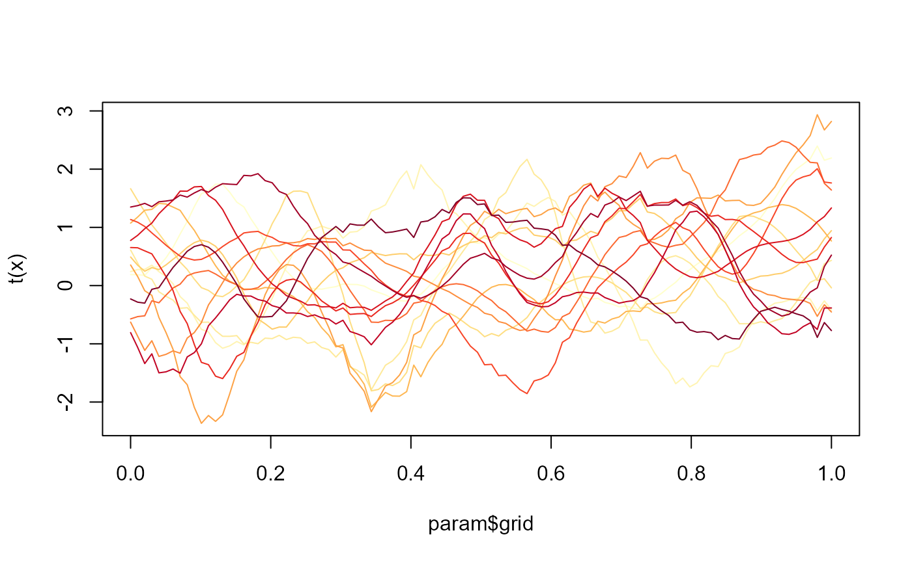
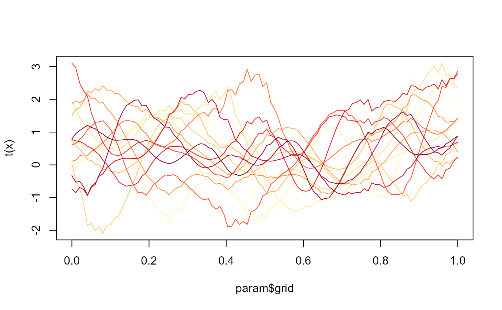
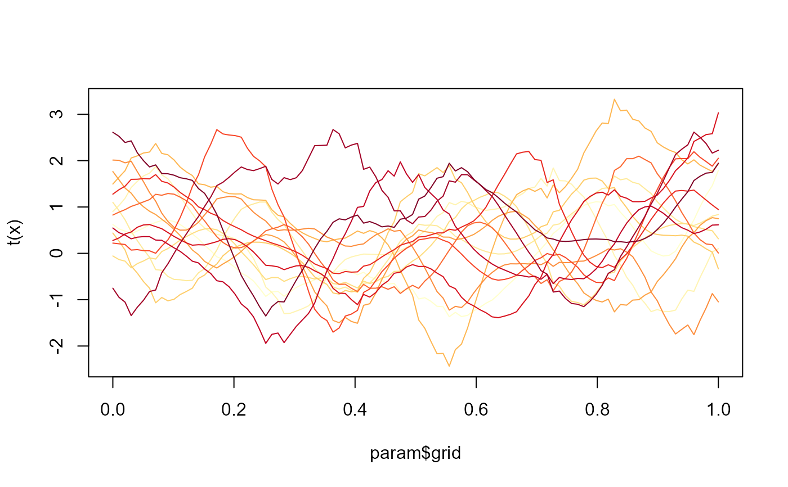

Simulate functional covariate observations.
sim_x(param)a list containing :
a numerical vector, the observation times.
an integer, the sample size.
an integer, the number of observation times.
a numerical vector (optional), the diagonal of the autocorrelation matrix.
a numerical value (optional), the dimension of the Fourier basis, if "shape" is "Fourier" or "Fourier2".
a numerical value (optional) related to the observations correlation.
a character vector (optional), the shape of the observations.
a matrix which contains the functional covariate observations at time
points given by grid.
Several shape are available for the observations: "Fourier", "Fourier2", "random_walk", "random_sharp", "uniform", "gaussian", "mvgauss", "mvgauss_different_scale", "mvgauss_different_scale2", "mvgauss_different_scale3" and "mvgauss_different_scale4".
library(RColorBrewer)
### Fourier
param <- list(n=15,p=100,grid=seq(0,1,length=100),x_shape="Fourier")
x <- sim_x(param)
cols <- colorRampPalette(brewer.pal(9,"YlOrRd"))(15)
matplot(param$grid,t(x),type="l",lty=1,col=cols)
### Fourier2
param <- list(n=15,p=100,grid=seq(0,1,length=100),x_type="Fourier2")
x <- sim_x(param)
cols <- colorRampPalette(brewer.pal(9,"YlOrRd"))(15)
matplot(param$grid,t(x),type="l",lty=1,col=cols)
### random_walk
param <- list(n=15,p=100,grid=seq(0,1,length=100),x_type="random_walk")
x <- sim_x(param)
cols <- colorRampPalette(brewer.pal(9,"YlOrRd"))(15)
matplot(param$grid,t(x),type="l",lty=1,col=cols)
### random_sharp
param <- list(n=15,p=100,grid=seq(0,1,length=100),x_type="random_sharp")
x <- sim_x(param)
cols <- colorRampPalette(brewer.pal(9,"YlOrRd"))(15)
matplot(param$grid,t(x),type="l",lty=1,col=cols)

### uniform
param <- list(n=15,p=100,grid=seq(0,1,length=100),x_type="uniform")
x <- sim_x(param)
cols <- colorRampPalette(brewer.pal(9,"YlOrRd"))(15)
matplot(param$grid,t(x),type="l",lty=1,col=cols)
### gaussian
param <- list(n=15,p=100,grid=seq(0,1,length=100),x_type="gaussian")
x <- sim_x(param)
cols <- colorRampPalette(brewer.pal(9,"YlOrRd"))(15)
matplot(param$grid,t(x),type="l",lty=1,col=cols)

### mvgauss
param <- list(n=15,p=100,grid=seq(0,1,length=100),x_type="mvgauss")
x <- sim_x(param)
cols <- colorRampPalette(brewer.pal(9,"YlOrRd"))(15)
matplot(param$grid,t(x),type="l",lty=1,col=cols)
